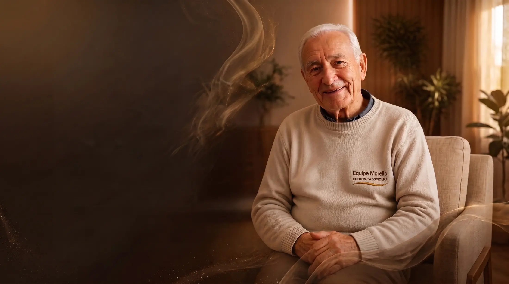
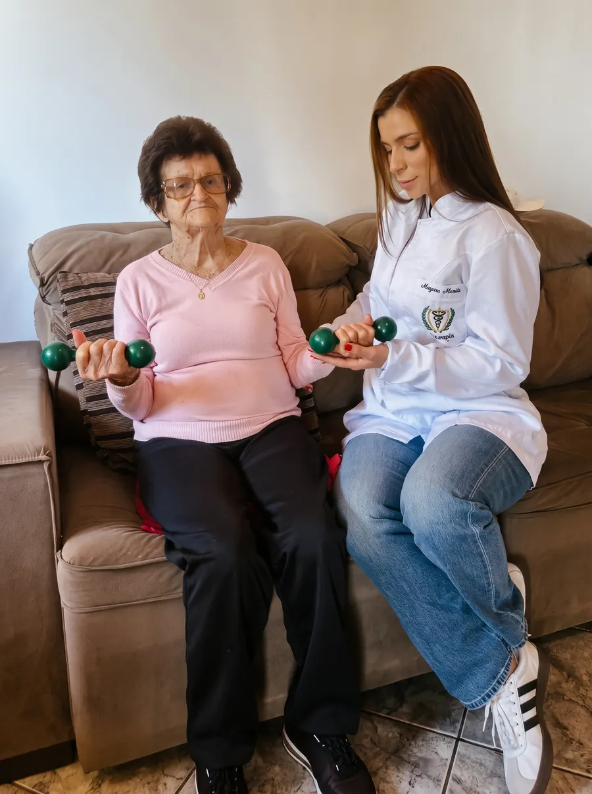
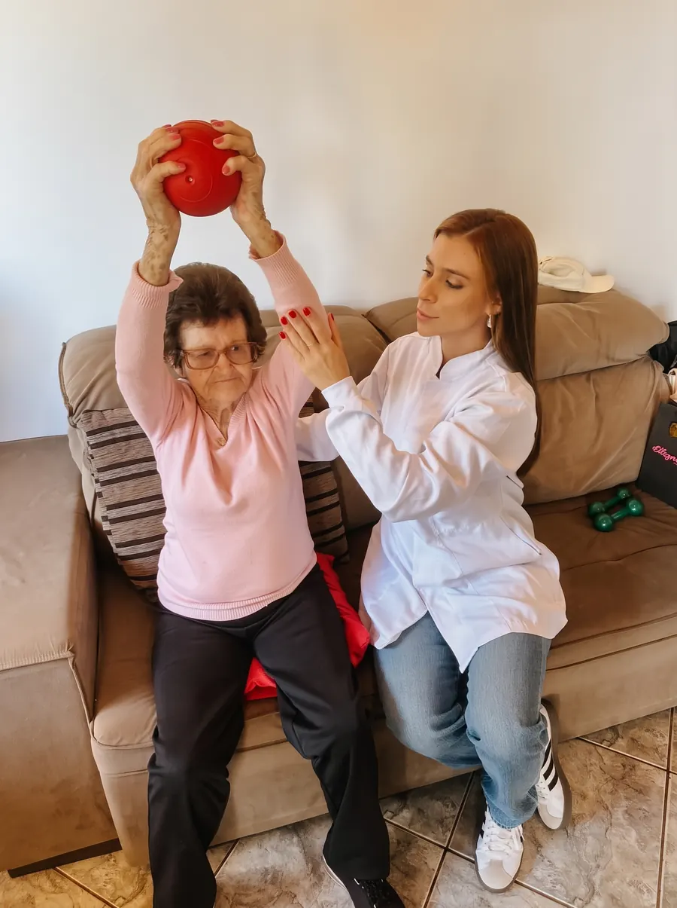
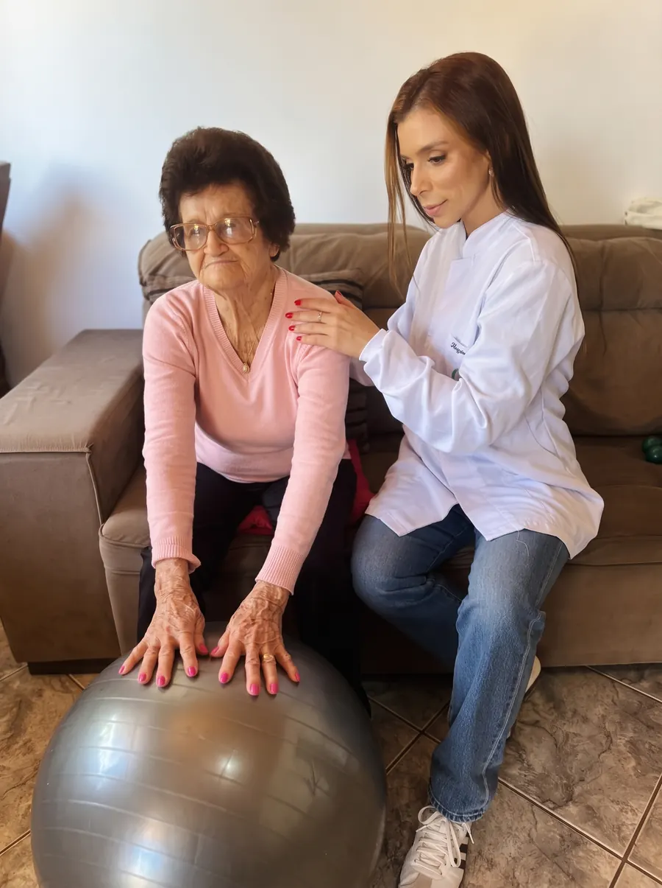
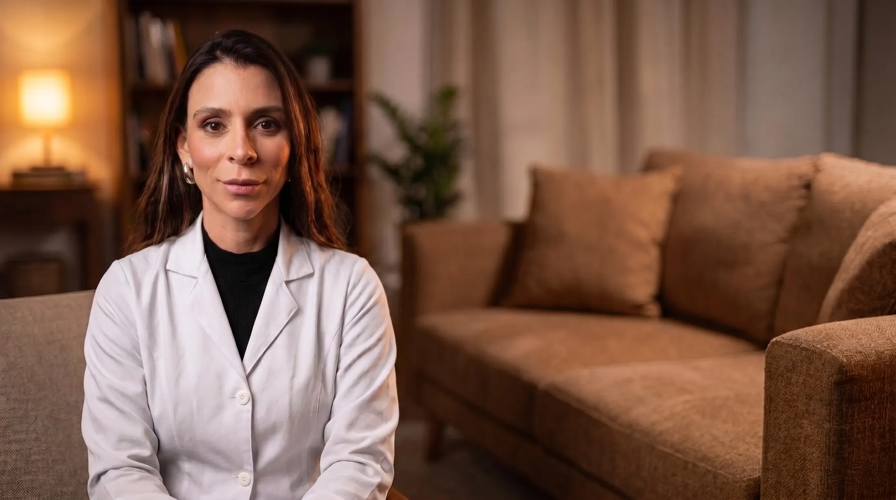
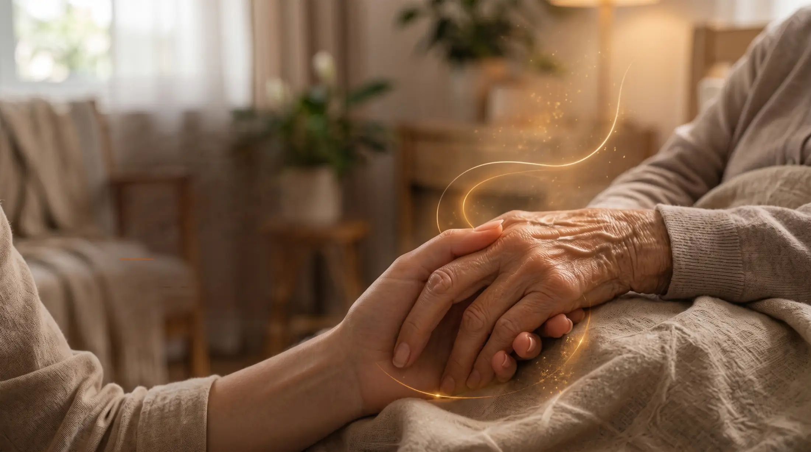
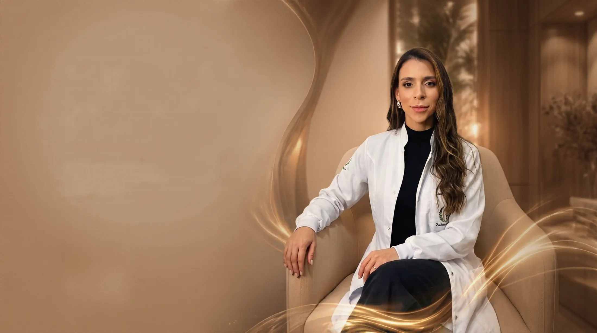

Fisioterapia domiciliar em Cascavel–PR
Seu familiar precisa de fisioterapia? O cuidado pode começar em casa.
Atendimento para idosos e pessoas em reabilitação pós‑AVC, com avaliação individual e um plano de cuidado pensado para suas necessidades, sem deslocamento até uma clínica.
- Mayara Morello · Fisioterapeuta · CREFITO 223762-F
- Segunda a sexta, das 9h às 18h
Cuidado que vai além do corpo.

Para quem busca cuidado em casa
Fisioterapia para idosos: quando os movimentos do dia a dia precisam de mais cuidado.
Levantar da cadeira, caminhar pela casa ou retomar atividades após um AVC pode trazer desafios para seu familiar. A fisioterapia domiciliar oferece acompanhamento individual, considerando suas necessidades e sua rotina, no conforto de casa.
O que atendemos
- AVC
- Quedas
- Fratura de fêmur
- Prótese de quadril
- Prótese de joelho
- Parkinson
- Alzheimer
- Perda de força
- Pós-internação
- Artrose
- Paciente acamado
Não encontrou a condição do seu familiar? Conte pelo WhatsApp que a equipe orienta.
O lar também faz parte do cuidado. Menos deslocamentos. Mais atenção à rotina do seu familiar.
Receber fisioterapia em casa permite que o cuidado considere não apenas os exercícios, mas também o ambiente e as atividades que fazem parte do dia a dia.
Atendimento sem sair de casa
Quando o deslocamento é difícil, o cuidado vai até seu familiar, sem precisar organizar idas à clínica a cada sessão.
Avaliação no ambiente real
O espaço da casa e as dificuldades da rotina podem ser considerados nas orientações e no planejamento.
Cuidado individualizado
As condutas são planejadas conforme a avaliação e ajustadas de acordo com as necessidades identificadas durante o acompanhamento.
Atendimento real em domicílio
Assim é uma sessão na casa do paciente.
Exercícios adaptados à rotina e ao espaço da casa, com acompanhamento de perto durante toda a sessão.
-

Fortalecimento dos braços
-

Mobilidade de ombros e alongamento
-

Equilíbrio e controle do tronco

Equipe Morello
Conheça a fisioterapeuta
Mayara Morello
Fundadora da Equipe Morello | Fisioterapeuta · CREFITO 223762-F
A Equipe Morello nasceu do desejo da fisioterapeuta Mayara Morello de transformar a reabilitação em uma experiência mais humana, acolhedora e próxima da realidade das famílias. Percebendo que os maiores avanços acontecem onde a vida de fato se desenvolve, ela idealizou um atendimento que leva técnica especializada diretamente para o ambiente familiar.
Frentes de atuação:
- Saúde da pessoa idosa: manutenção da mobilidade, ganho de força e prevenção ativa de quedas.
- Reabilitação pós-AVC: estímulo neurológico e motor focado na retomada das atividades do dia a dia.
- Atendimento domiciliar: conforto, comodidade e cuidado técnico sem precisar sair de casa (Cascavel–PR).

Começar é simples
Você não precisa ter todas as respostas para entrar em contato.
A conversa inicial é o momento de esclarecer dúvidas, consultar disponibilidade e entender como funciona a avaliação domiciliar.
-
Chame no WhatsApp
Conte para quem é o atendimento e em qual bairro de Cascavel ele mora.
-
Tire suas dúvidas
Veja os horários disponíveis e os valores com a equipe.
-
Agende a avaliação
Escolha o melhor dia e horário, de segunda a sexta.
-
Avaliação em casa
A Mayara vai até a residência, avalia seu familiar e apresenta o plano de acompanhamento.
O agendamento é confirmado durante a conversa com a equipe.
Atendimento em Cascavel–PR
Descubra se há disponibilidade para atender seu familiar.
Informe seu bairro e para quem seria o atendimento. A equipe poderá esclarecer dúvidas e apresentar os horários disponíveis para uma avaliação domiciliar.
- Atendimento exclusivamente em Cascavel.
- Segunda a sexta, das 9h às 18h.
- WhatsApp: (45) 99852-0799.
Prepare sua mensagem para a equipe.
Preencha as informações abaixo e continue no WhatsApp.

O primeiro passo é uma conversa
Vamos conversar sobre o cuidado de quem você ama.
Consulte a disponibilidade para fisioterapia domiciliar em Cascavel e entenda como começar com uma avaliação individual.
Segunda a sexta, das 9h às 18h · Atendimento mediante agendamento.
Antes do primeiro contato
Informações para decidir com mais tranquilidade.
Veja as principais dúvidas sobre o atendimento. Para consultar valores e disponibilidade, converse com a equipe pelo WhatsApp.
Onde vocês atendem?
O atendimento é domiciliar e realizado exclusivamente em Cascavel, Paraná. Informe seu bairro para consultar a disponibilidade.
Como funciona a primeira avaliação?
A avaliação acontece na residência e busca compreender as necessidades da pessoa. A partir dela, são discutidos os objetivos e o planejamento do acompanhamento.
Vocês atendem pessoas que tiveram AVC?
Sim. A reabilitação pós-AVC faz parte das áreas de atendimento da Equipe Morello. As condutas são orientadas pela avaliação individual.
Quais são os dias e horários?
De segunda a sexta-feira, das 9h às 18h. As visitas são agendadas conforme a disponibilidade.
Como consultar valores e formas de pagamento?
Entre em contato pelo WhatsApp para receber as informações e esclarecer dúvidas antes de agendar.
Preciso ter equipamentos em casa?
Converse com a equipe antes de providenciar materiais. As orientações sobre o que poderá ser necessário dependem do atendimento indicado.